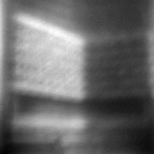
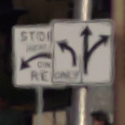

Research
I'm interested in computational imaging, imaging through turbulence, and machine learning. Some papers are highlighted .

Guidestar-Free Adaptive Optics with Asymmetric Apertures
Weiyun Jiang* ,
Haiyun Guo* ,
Christopher A. Metzler† ,
Ashok Veeraraghavan†
Manuscript , 2026
project page
/
arXiv
The first closed-loop adaptive optics system capable of real-time optical correction without the need for a guidestar or a specialized wavefront sensor.

NeRT: Implicit Neural Representations for General Unsupervised Turbulence Mitigation
Weiyun Jiang ,
Yuhao Liu ,
Vivek Boominathan ,
Ashok Veeraraghavan
CVPRW , 2023
project page
/
arXiv
/
code
/
data
/
slides
Unsupervised turbulence mitigation using a physically correct tilt-then-blur atmospheric turbulence forward model.
Your browser does not support the video tag.
Temporally Consistent Atmospheric Turbulence Mitigation with Neural Representations
Haoming Cai* ,
Jingxi Chen* ,
Brandon Y. Feng ,
Weiyun Jiang ,
Mingyang Xie ,
Kevin Zhang ,
Ashok Veeraraghavan ,
Christopher A. Metzler
NeurIPS , 2024
project page
/
paper
Restores temporally coherent sharp videos from atmospheric turbulence degraded videos.
{kind=link}